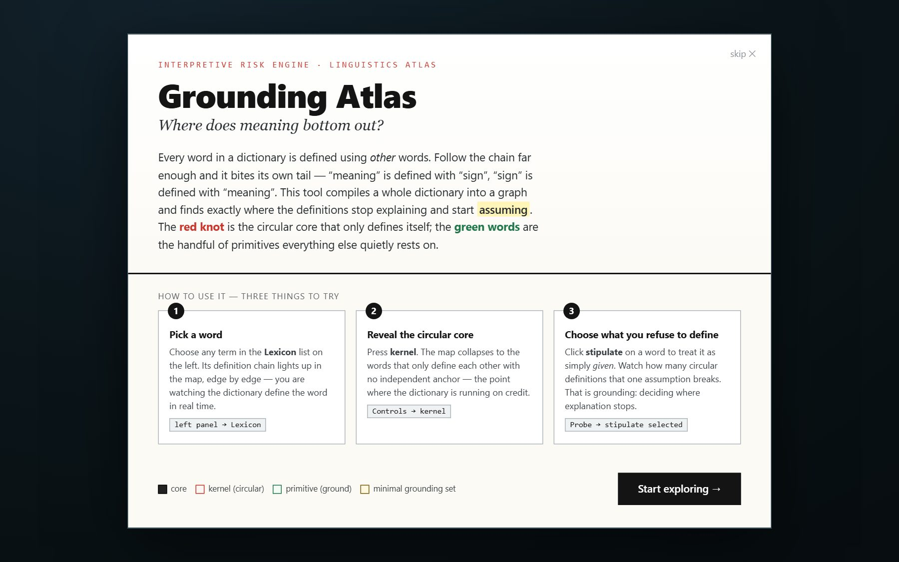
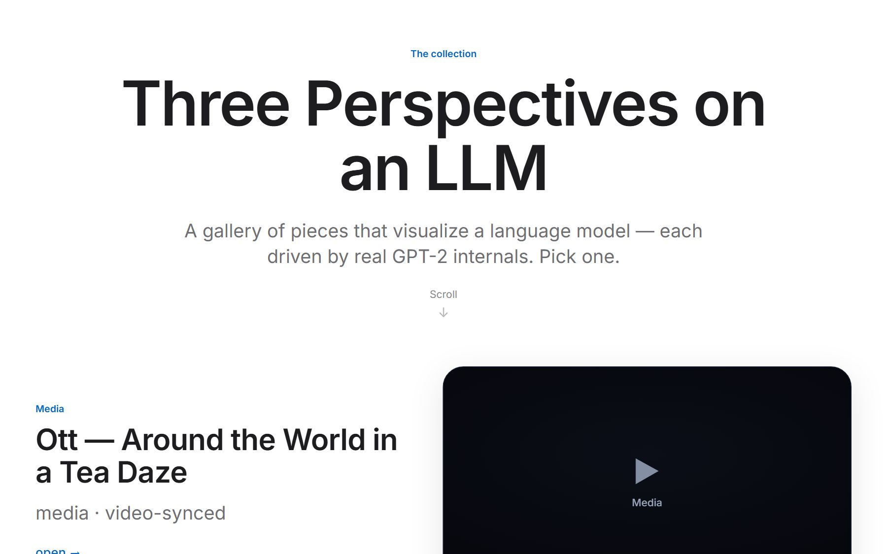
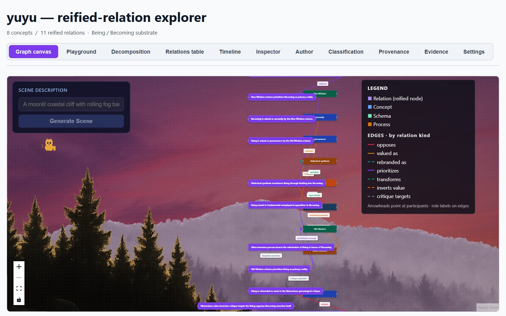
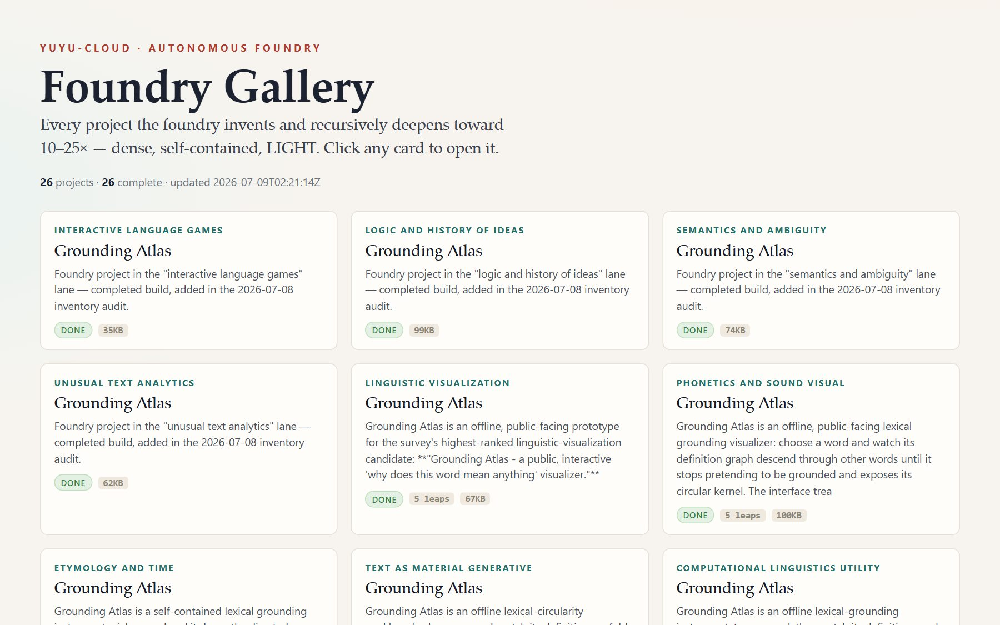
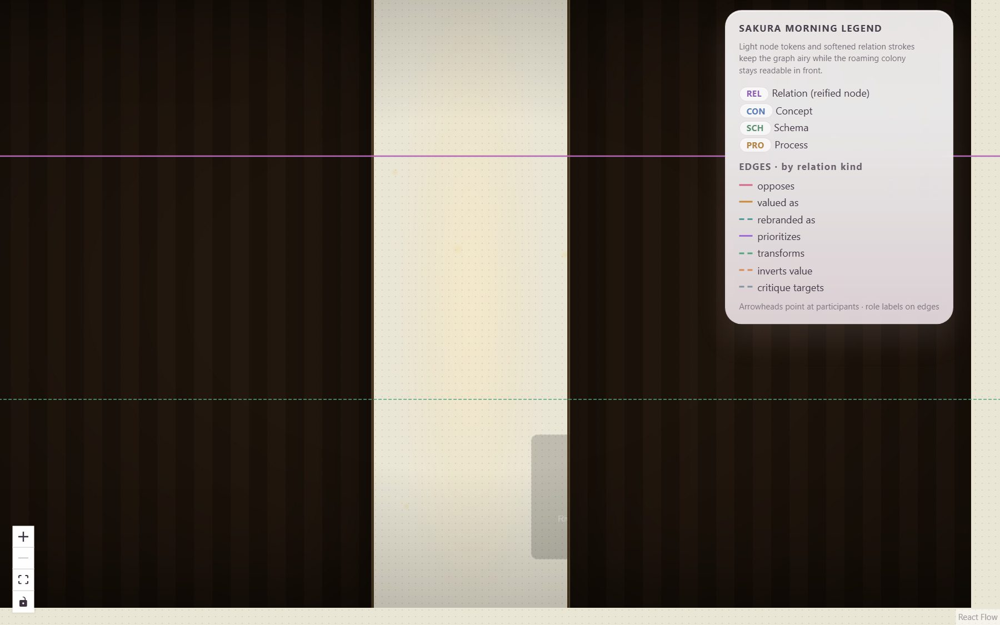
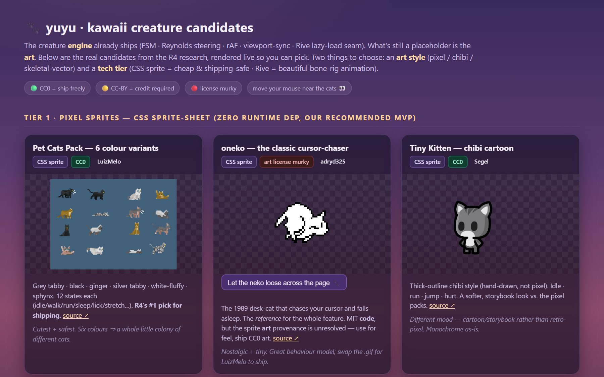
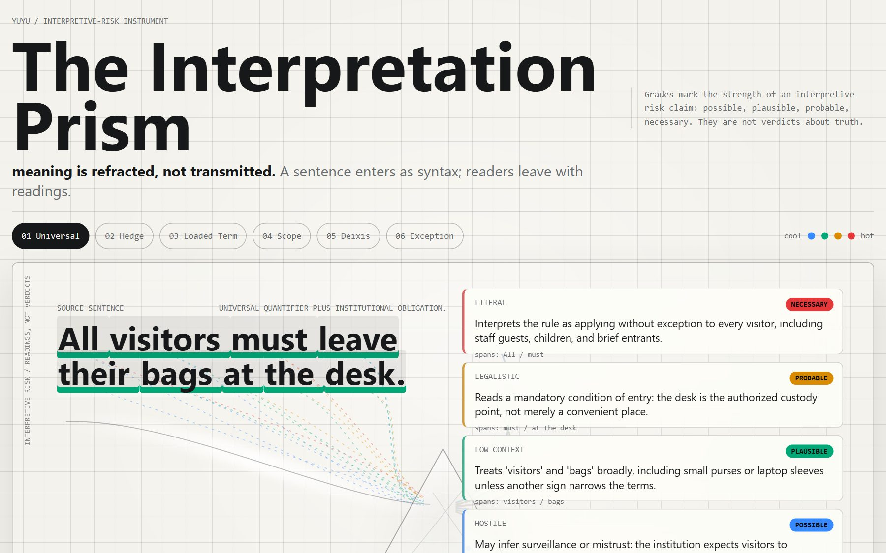
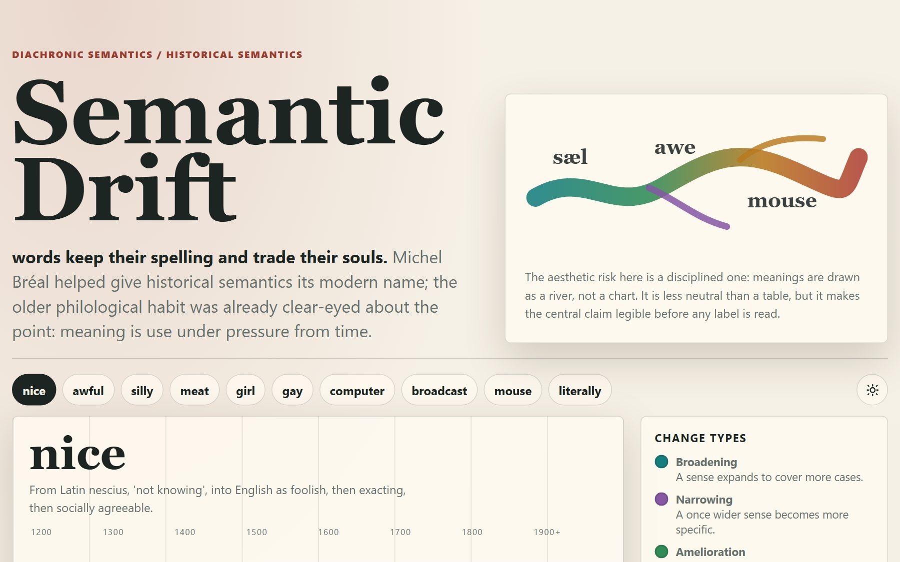
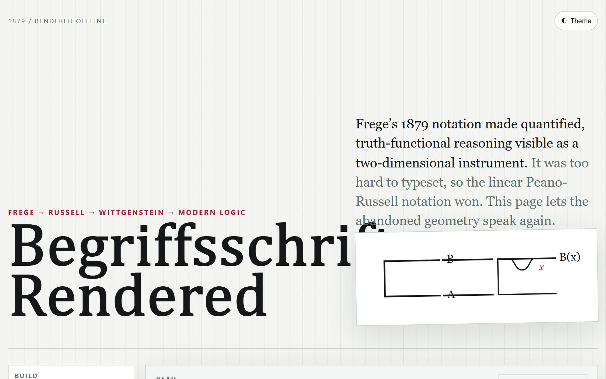
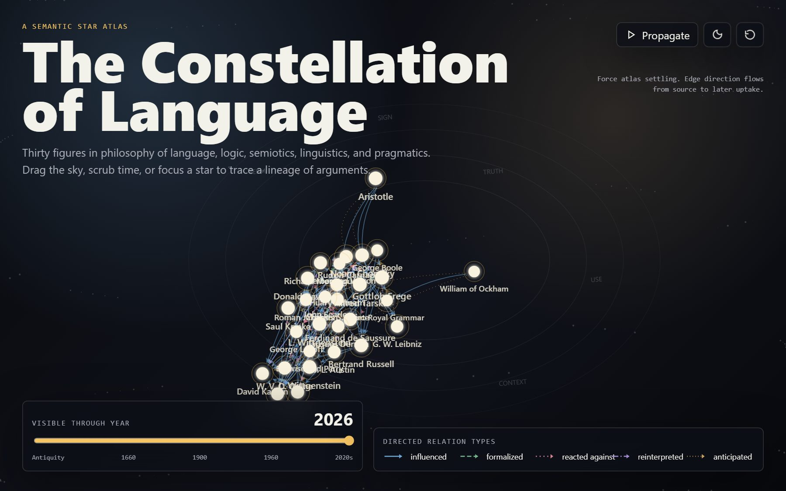

yuyu-cloud · a linguistics & interpretive-risk research engine
A working gallery of the apps and prototypes built on the yuyu system — the research engine and the visual tools around it. Each card is one glance: a picture, a title, a one-line hook. Tap any card for the full detail page. The featured project and the flagship sit up top; everything else is ordered by how substantial it is.
The world's press, live: every 15 minutes GDELT's news firehose becomes headlines you query in plain English
A whole mining enterprise as one living graph — ask it anything in plain English, get a WebGL graph or a table back

Every definition is made of words you also have to look up — this maps the loops and finds the words underneath them all

A small GPT-style AI running live in your browser, cracked open three ways so you can watch what an LLM is actually doing

An interactive tree that pulls an event into cause and effect on two axes at once — with cycles where causes feed back on themselves

~23 tiny, self-contained linguistics toys — etymology timelines to phonetics visualisers — spun up by the build system

Animated pixel-cats wander the yuyu knowledge graph — a cute skin that doubles as a real graph-rendering stress-test

The pixel-cat casting call behind Roaming Kittens — every candidate sprite with its preview, licence, and keep/reject verdict

One sentence, split like light through a prism into the several different meanings a reader could take from it.

How a word's meaning slides over time and context — the same term quietly coming to mean something else.

Frege's 19th-century “concept-writing” — the ancestor of modern logic notation — as an interactive diagram.

Words and meanings arranged as a night sky of constellations — relationships drawn as the lines between stars.
Ordered by substance: flagship first, then power-apps that need a server, then
everything that just runs. Badges are honest — an amber tile whose backend is off will
render blank. This page is generated from
manifests/*.json by build/build_showcase.py; it is not hand-edited.